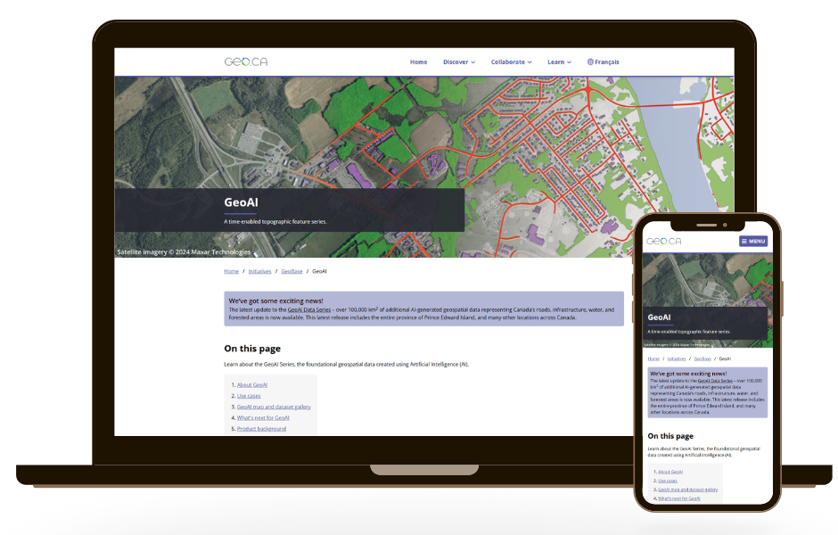

GeoAI Data Series Launch Campaign
Natural Resources Canada
Role: Graphic Designer & Communications Lead
Tools: Illustrator · Photoshop · M365 · Slack · Trello
Role: Graphic Designer & Communications Lead
Tools: Illustrator · Photoshop · M365 · Slack · Trello
As the lead for the strategic communications plan supporting the launch of the GeoAI Data Series, I planned and designed creative materials to promote the release of AI-derived geospatial datasets. The initiative showcases how Deep Learning models can extract features such as buildings, hydrography, forests, and roads from aerial and satellite imagery, demonstrating the value of AI in geospatial data production.
The GeoAI Data Series was a technically complex release with limited public awareness and few visuals to convey its impact. The challenge was to communicate the dataset's significance in an impactful and accessible way to both technical audiences and the general public
I collaborated with data scientists and program leads to create a visual identity and outreach strategy for the series.
The GeoAI Data Series launch featured:
This project strengthened my ability to translate complex technical information into a variety of engaging materials. It also reinforced the importance of thoughtful design in making scientific and data-driven content more relatable to diverse audiences.